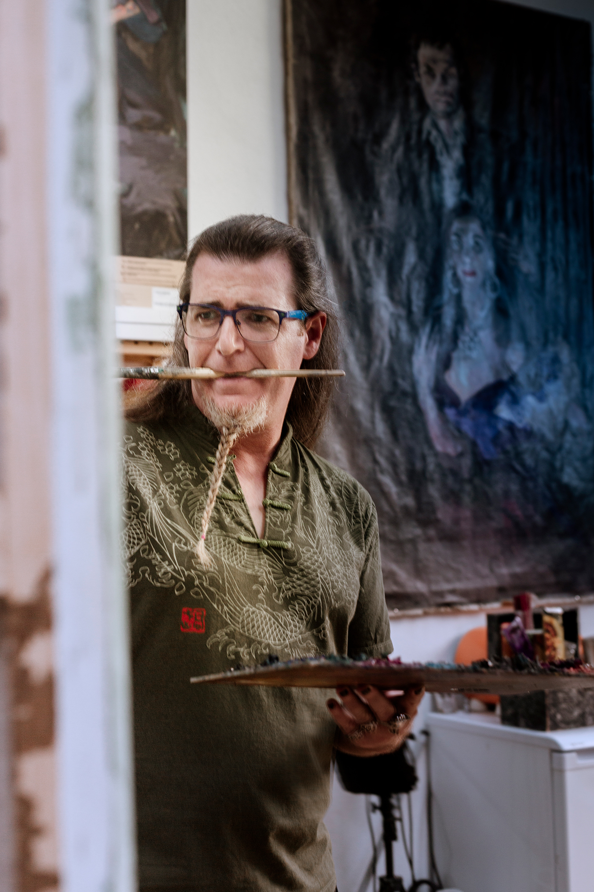

BREVE BIOGRAFÍA
García Villarán nació en 1976 en la localidad sevillana de Aznalcázar, aunque reside desde los 4 años en la ciudad de Sevilla. Comenzó a pintar cuando tenía trece años. Se licenció y doctoró en Bellas Artes en la Facultad de Bellas Artes de Sevilla en la especialidad de pintura, ejerciendo la docencia en dicha institución. Es fundador, junto con Nuria Mezquita de Haro, de la editorial Cangrejo Pistolero Ediciones. También organizó en Sevilla el festival de Perfopoesía.
